CONCEPT CAD · DRAFT โครงอะลูมิเนียมยึดน็อต · ไม่มีชิ้นกลึง · 2026-10-28
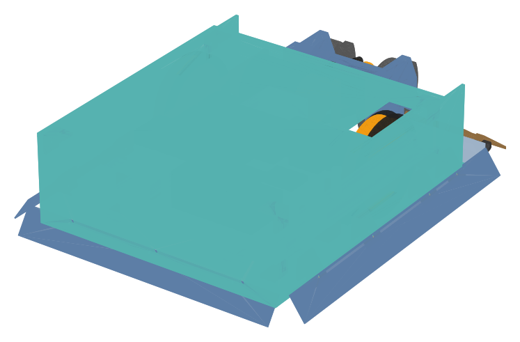
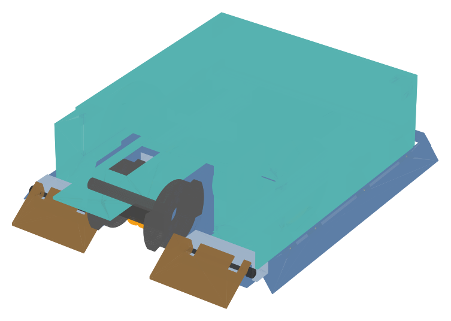
บอกลำดับประกอบหลังจากตัดและเจาะชิ้นส่วนโครงเสร็จแล้ว ทุกภาพ รายการชิ้นส่วน และรายการน็อต สร้างจาก CAD
(build_r5_al.py) จึงตรงกับแบบเสมอ ชิ้นใหม่ของแต่ละขั้นเป็นสี ชิ้นที่ประกอบแล้วเป็นสีเทา
| ขั้น | ชิ้นใหม่ |
|---|---|
| ขั้น 1 — ประกอบโครงอะลูมิเนียม | 33 |
| ขั้น 2 — พื้น PC และ skid ท้าย | 2 |
| ขั้น 3 — ระบบขับ (มอเตอร์ขับ 2 ตัว + ล้อ) | 15 |
| ขั้น 4 — ทำดุมอาวุธ (งานเชื่อมจุดเดียวของรถ) | 7 |
| ขั้น 5 — โมดูลอาวุธ (แผ่นตั้ง + ดุม) ยึดเข้าโครง | 25 |
| ขั้น 6 — มอเตอร์อาวุธ สายพาน และเซนเซอร์รอบ | 9 |
| ขั้น 7 — แผ่นบานพับและ wedgelet | 12 |
| ขั้น 8 — แบต อิเล็กทรอนิกส์ และการเดินสาย | 13 |
| ขั้น 9 — ผนังข้าง ผนังท้าย และ skirt | 17 |
| ขั้น 10 — ฝา และตรวจก่อนลงสนาม | 5 |
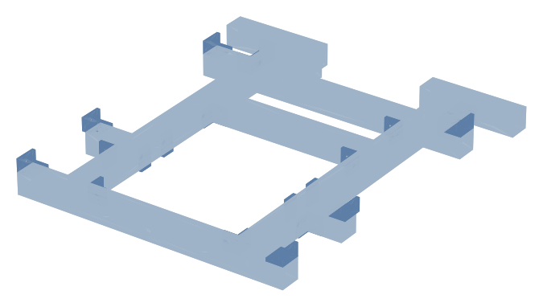
| ชิ้นส่วน | จำนวน |
|---|---|
| คานขวางท้าย | 1 |
| คานขวางกลาง (หลังแผ่นตั้งอาวุธ) | 1 |
| ท่อสั้นปลายคานขวางกลาง | 2 |
| คานข้าง ท่ออะลูมิเนียม 12.7×12.7×2.0 | 2 |
| คานบานพับ wedgelet | 2 |
| คานขวางใต้มอเตอร์ขับ | 1 |
| คานกดมอเตอร์ขับ | 1 |
| แผ่นร้อยสายรัดแบต | 4 |
| แผ่นยึดผนัง (อะลูมิเนียม 2 มม.) | 6 |
| ท่อสั้นค้ำกลางผนัง | 2 |
| ฉาก cleat 20×20×2 ที่มุมโครง | 11 |
| จุดยึด | น็อต / สกรู | จุด |
|---|---|---|
| แผ่นร้อยสายรัดแบต → ด้านในคานข้าง | M3×6 เข้า rivnut M3 | 4 |
| แผ่นยึดผนัง → บนท่อ | M3×6 เข้า rivnut M3 | 6 |
| ฉาก cleat ที่มุมโครง | 2 × M3×6 เข้า rivnut M3 | 11 |
รวม 32 ตัว (ตำแหน่งดูภาคผนวก)
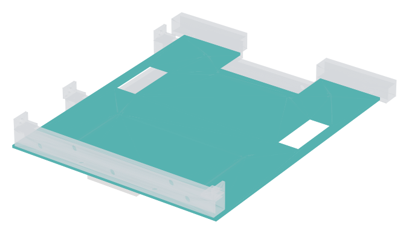
| ชิ้นส่วน | จำนวน |
|---|---|
| พื้น PC 2 มม. | 1 |
| skid ท้าย UHMW/HDPE 3 มม. | 1 |
| จุดยึด | น็อต / สกรู | จุด |
|---|---|---|
| พื้น PC → ใต้คานข้าง | M3×6 หัวจม สเตนเลส A2 เข้า rivnut M3 | 6 |
| พื้น PC → ใต้คานขวางท้าย | M3×6 หัวจม สเตนเลส A2 เข้า rivnut M3 | 2 |
| พื้น PC → ใต้คานขวางกลาง | M3×6 หัวจม สเตนเลส A2 เข้า rivnut M3 | 2 |
รวม 10 ตัว (ตำแหน่งดูภาคผนวก)
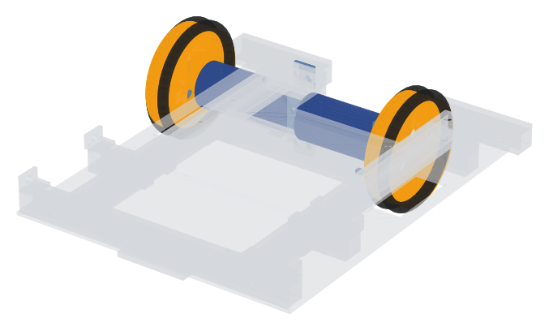
| ชิ้นส่วน | จำนวน |
|---|---|
| มอเตอร์ขับ ORTECH JB361 12V 400 rpm | 2 |
| แผ่นยึดมอเตอร์ขับ | 2 |
| แผ่นยาง EPDM รองมอเตอร์ขับ | 4 |
| เสายึดคานกดมอเตอร์ | 1 |
| ดุมล้อพิมพ์ PETG 100% | 2 |
| โอริง NBR P52 (ยางล้อ) | 4 |
| จุดยึด | น็อต / สกรู | จุด |
|---|---|---|
| แผ่นยึดมอเตอร์ขับ → บนคานข้าง | M3×8 เข้า rivnut M3 | 4 |
| เสายึด → หน้าคานขวางใต้มอเตอร์ | M3×6 เข้า rivnut M3 | 2 |
| เสายึด → หน้าคานกดมอเตอร์ | M3×6 เข้า rivnut M3 | 2 |
รวม 8 ตัว (ตำแหน่งดูภาคผนวก)
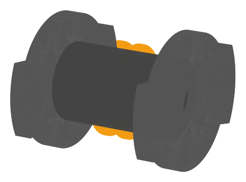
| ชิ้นส่วน | จำนวน |
|---|---|
| จานอาวุธเหล็ก 6 มม. | 2 |
| ลูกปืน 608ZZ | 2 |
| ท่อเหล็กดำ 3/4" ยาว 40 (ดุมอาวุธ) | 1 |
| ปีกกันสายพานหลุด PETG | 2 |
ขั้นนี้ไม่มีจุดยึดจากรายการจุดยึด (ใช้วิธีในข้อ "วิธีทำ")
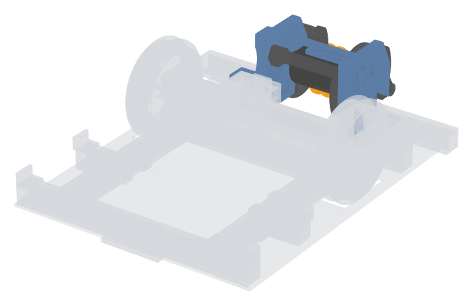
| ชิ้นส่วน | จำนวน |
|---|---|
| แผ่นตั้ง 6061 หนา 6 มม. (ต๊าป M4) | 2 |
| brace บน 6061 3 มม. | 1 |
| brace ล่าง 6061 3 มม. | 1 |
| จานอาวุธเหล็ก 6 มม. | 2 |
| ลูกปืน 608ZZ | 2 |
| สกรู M8×80 เกรด 12.9 (เพลาอาวุธ) | 1 |
| น็อตล็อก/แหวน M8 | 3 |
| แท่งอะลูมิเนียมตัน 12.7 ยาว 13 | 2 |
| ฉากตั้ง 6061 3 มม. | 2 |
| ฉากฐาน 6061 3 มม. (3 ขา) | 2 |
| ท่อเหล็กดำ 3/4" ยาว 40 (ดุมอาวุธ) | 1 |
| ปีกกันสายพานหลุด PETG | 2 |
| spacer เพลา PETG | 3 |
| skid หน้า UHMW/HDPE 3 มม. | 1 |
| จุดยึด | น็อต / สกรู | จุด |
|---|---|---|
| แผ่นตั้ง → แท่งตัน → คานข้าง | M4×45 เกรด 8.8 + แหวน (หัวอยู่นอกคานข้าง) ขันเข้าเกลียวแผ่นตั้ง | 2 |
| แผ่นตั้ง → ฉากตั้ง | M4×10 เกรด 8.8 + แหวน ขันเข้าเกลียวแผ่นตั้ง | 2 |
| แผ่นตั้ง → ฉากฐาน (ขา B) | M4×10 เกรด 8.8 + แหวน ขันเข้าเกลียวแผ่นตั้ง | 2 |
| ฉากตั้ง (ขานอน) → บนคานข้าง | M4×10 เกรด 8.8 เข้า rivnut M4 | 2 |
| ฉากฐาน (ขา C) → ด้านในคานข้าง | M3×8 เกรด 8.8 เข้า rivnut M3 | 2 |
| ฉากฐาน (ขา A) → หน้าคานขวางกลาง | M3×8 เกรด 8.8 เข้า rivnut M3 | 4 |
รวม 14 ตัว (ตำแหน่งดูภาคผนวก)
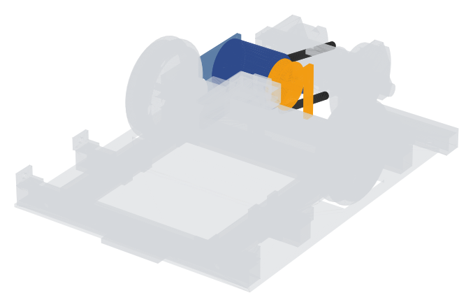
| ชิ้นส่วน | จำนวน |
|---|---|
| มอเตอร์อาวุธ SURPASS C3536 1300KV (หรือ D3536) | 1 |
| สายพานกลม PU 5 มม. | 2 |
| เซนเซอร์ hall A3144 | 1 |
| ฐานมอเตอร์อาวุธ 6061 3 มม. | 1 |
| ฉากยึดฐานมอเตอร์อาวุธ | 2 |
| เสายึดเซนเซอร์ hall (PETG) | 1 |
| พูลเลย์มอเตอร์ PETG/ASA | 1 |
ขั้นนี้ไม่มีจุดยึดจากรายการจุดยึด (ใช้วิธีในข้อ "วิธีทำ")
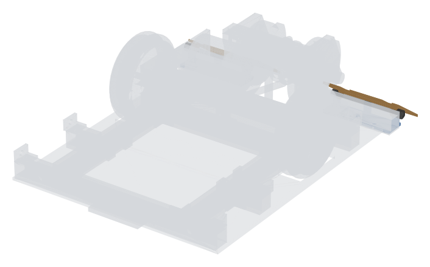
| ชิ้นส่วน | จำนวน |
|---|---|
| แผ่นบานพับ (พับจากแผ่นฐาน) | 6 |
| แผ่นฐานบานพับ 5052 2 มม. (พับแผ่นบานพับขึ้น) | 2 |
| wedgelet เหล็ก 1.6 มม. | 2 |
| สกรูสเตนเลส M3×55 (หมุดบานพับ) | 2 |
| จุดยึด | น็อต / สกรู | จุด |
|---|---|---|
| แผ่นฐานบานพับ → ใต้คานบานพับ | M3×6 หัวจม เข้า rivnut M3 | 6 |
รวม 6 ตัว (ตำแหน่งดูภาคผนวก)
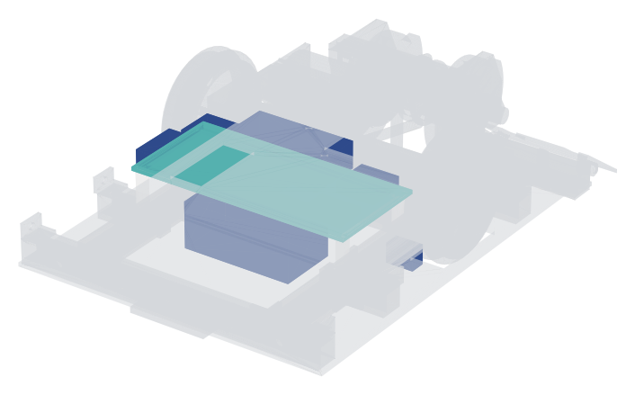
| ชิ้นส่วน | จำนวน |
|---|---|
| ESC Skywalker 40A | 1 |
| ESP32 | 1 |
| บอร์ดขับมอเตอร์ DRV8871 | 2 |
| ฟองน้ำรอง IMU | 1 |
| IMU GY-521 | 1 |
| สวิตช์ตัดไฟ (link เสียบ) | 1 |
| แผ่นวางบอร์ด PC 2 มม. | 1 |
| เสาไนลอน M3 | 4 |
| แบต LiPo 3S 650 mAh (ขนาด 57×31×24) | 1 |
| จุดยึด | น็อต / สกรู | จุด |
|---|---|---|
| แผ่นวางบอร์ด → เสาไนลอน | M3×6 ไนลอน | 4 |
รวม 4 ตัว (ตำแหน่งดูภาคผนวก)
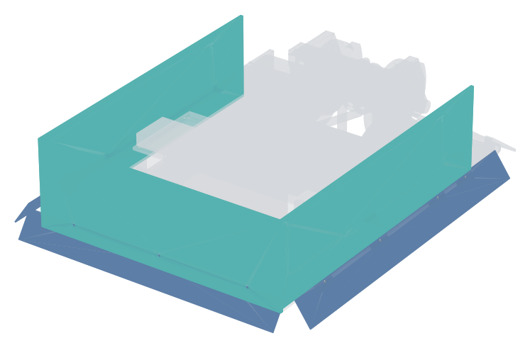
| ชิ้นส่วน | จำนวน |
|---|---|
| skirt อะลูมิเนียม 0.8 มม. | 3 |
| ขายึด skirt 5052 1.5 มม. | 11 |
| ผนังท้าย PC 2 มม. | 1 |
| ผนังข้าง PC 2 มม. | 2 |
| จุดยึด | น็อต / สกรู | จุด |
|---|---|---|
| ผนังข้าง PC → แผ่นยึดผนัง | M3×8 สเตนเลส A2 + น็อตล็อก | 6 |
| ผนังท้าย PC → คานขวางท้าย | M3×6 สเตนเลส A2 เข้า rivnut M3 | 3 |
รวม 9 ตัว (ตำแหน่งดูภาคผนวก)
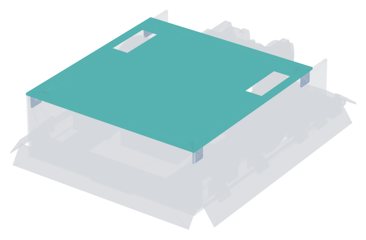
| ชิ้นส่วน | จำนวน |
|---|---|
| ฝา PC 2 มม. | 1 |
| ฉากยึดฝา 12×12×1.5 | 4 |
| จุดยึด | น็อต / สกรู | จุด |
|---|---|---|
| ฉากยึดฝา → ผนังข้าง | M3×8 สเตนเลส A2 + น็อตล็อก | 4 |
| ฝา → ฉากยึดฝา | M3×6 สเตนเลส A2 + น็อตล็อก | 4 |
รวม 8 ตัว (ตำแหน่งดูภาคผนวก)
firmware/pad_test/pad_test.ino เข้า ESP32 เปล่า จับคู่จอย ค่าต้องเปลี่ยนตามคันโยก และส่งข้อมูลต่อเนื่องตอนถือคันโยกนิ่งfirmware/v4_controller แล้วถอดสายพานออกก่อนตำแหน่ง x, y, z เป็นมม. จาก CAD (แกน Z ขึ้น หน้ารถ +Y, ศูนย์กลางรถ x 0 · เพลาล้อหน้า y 18) · คอลัมน์ "ขั้น" คือขั้นในคู่มือนี้
| ขั้น | จุดยึด | น็อต | rivnut ใน | x, y, z |
|---|---|---|---|---|
| 1 | แผ่นร้อยสายรัดแบต → ด้านในคานข้าง | M3×6 เข้า rivnut M3 | Frame_Rail_L | -45.0, -50.0, 12.3 |
| 1 | แผ่นร้อยสายรัดแบต → ด้านในคานข้าง | M3×6 เข้า rivnut M3 | Frame_Rail_L | -45.0, -31.0, 12.3 |
| 1 | แผ่นยึดผนัง → บนท่อ | M3×6 เข้า rivnut M3 | Frame_Rear_Cross | -75.0, -101.7, 18.7 |
| 1 | แผ่นยึดผนัง → บนท่อ | M3×6 เข้า rivnut M3 | Frame_Bulkhead_Stub_L | -75.0, 56.4, 18.7 |
| 1 | แผ่นยึดผนัง → บนท่อ | M3×6 เข้า rivnut M3 | Frame_Midwall_Stub_L | -75.0, -48.6, 18.7 |
| 1 | แผ่นร้อยสายรัดแบต → ด้านในคานข้าง | M3×6 เข้า rivnut M3 | Frame_Rail_R | 45.0, -50.0, 12.3 |
| 1 | แผ่นร้อยสายรัดแบต → ด้านในคานข้าง | M3×6 เข้า rivnut M3 | Frame_Rail_R | 45.0, -31.0, 12.3 |
| 1 | แผ่นยึดผนัง → บนท่อ | M3×6 เข้า rivnut M3 | Frame_Rear_Cross | 75.0, -101.7, 18.7 |
| 1 | แผ่นยึดผนัง → บนท่อ | M3×6 เข้า rivnut M3 | Frame_Bulkhead_Stub_R | 75.0, 56.4, 18.7 |
| 1 | แผ่นยึดผนัง → บนท่อ | M3×6 เข้า rivnut M3 | Frame_Midwall_Stub_R | 75.0, -48.6, 18.7 |
| 1 | ฉาก cleat ที่มุมโครง (Cleat_RearCross_L) | 2 × M3×6 เข้า rivnut M3 | Frame_Rail_L + Frame_Rear_Cross | -46.0, -95.3, 12.4 |
| 1 | ฉาก cleat ที่มุมโครง (Cleat_MotorCross_Rear_L) | 2 × M3×6 เข้า rivnut M3 | Frame_Rail_L + Frame_Motor_Cross | -46.0, 10.0, 12.4 |
| 1 | ฉาก cleat ที่มุมโครง (Cleat_BulkStub_L) | 2 × M3×6 เข้า rivnut M3 | Frame_Rail_L + Frame_Bulkhead_Stub_L | -58.7, 62.7, 12.4 |
| 1 | ฉาก cleat ที่มุมโครง (Cleat_HingeBeam_L) | 2 × M3×6 เข้า rivnut M3 | Frame_Rail_L + Frame_Hinge_Beam_L | -58.7, 85.3, 12.4 |
| 1 | ฉาก cleat ที่มุมโครง (Cleat_Midwall_L) | 2 × M3×6 เข้า rivnut M3 | Frame_Rail_L + Frame_Midwall_Stub_L | -58.7, -55.0, 12.4 |
| 1 | ฉาก cleat ที่มุมโครง (Cleat_RearCross_R) | 2 × M3×6 เข้า rivnut M3 | Frame_Rail_R + Frame_Rear_Cross | 46.0, -95.3, 12.4 |
| 1 | ฉาก cleat ที่มุมโครง (Cleat_BulkCross_R) | 2 × M3×6 เข้า rivnut M3 | Frame_Rail_R + Frame_Bulkhead_Cross | 46.0, 50.0, 12.4 |
| 1 | ฉาก cleat ที่มุมโครง (Cleat_MotorCross_Rear_R) | 2 × M3×6 เข้า rivnut M3 | Frame_Rail_R + Frame_Motor_Cross | 46.0, 10.0, 12.4 |
| 1 | ฉาก cleat ที่มุมโครง (Cleat_BulkStub_R) | 2 × M3×6 เข้า rivnut M3 | Frame_Rail_R + Frame_Bulkhead_Stub_R | 58.7, 62.7, 12.4 |
| 1 | ฉาก cleat ที่มุมโครง (Cleat_HingeBeam_R) | 2 × M3×6 เข้า rivnut M3 | Frame_Rail_R + Frame_Hinge_Beam_R | 58.7, 85.3, 12.4 |
| 1 | ฉาก cleat ที่มุมโครง (Cleat_Midwall_R) | 2 × M3×6 เข้า rivnut M3 | Frame_Rail_R + Frame_Midwall_Stub_R | 58.7, -55.0, 12.4 |
| 2 | พื้น PC → ใต้คานข้าง | M3×6 หัวจม สเตนเลส A2 เข้า rivnut M3 | Frame_Rail_L | -52.0, -80.0, 6.0 |
| 2 | พื้น PC → ใต้คานข้าง | M3×6 หัวจม สเตนเลส A2 เข้า rivnut M3 | Frame_Rail_L | -52.0, -30.0, 6.0 |
| 2 | พื้น PC → ใต้คานข้าง | M3×6 หัวจม สเตนเลส A2 เข้า rivnut M3 | Frame_Rail_L | -52.0, 75.0, 6.0 |
| 2 | พื้น PC → ใต้คานข้าง | M3×6 หัวจม สเตนเลส A2 เข้า rivnut M3 | Frame_Rail_R | 52.0, -80.0, 6.0 |
| 2 | พื้น PC → ใต้คานข้าง | M3×6 หัวจม สเตนเลส A2 เข้า rivnut M3 | Frame_Rail_R | 52.0, -30.0, 6.0 |
| 2 | พื้น PC → ใต้คานข้าง | M3×6 หัวจม สเตนเลส A2 เข้า rivnut M3 | Frame_Rail_R | 52.0, 75.0, 6.0 |
| 2 | พื้น PC → ใต้คานขวางท้าย | M3×6 หัวจม สเตนเลส A2 เข้า rivnut M3 | Frame_Rear_Cross | -30.0, -101.7, 6.0 |
| 2 | พื้น PC → ใต้คานขวางกลาง | M3×6 หัวจม สเตนเลส A2 เข้า rivnut M3 | Frame_Bulkhead_Cross | -30.0, 56.4, 6.0 |
| 2 | พื้น PC → ใต้คานขวางท้าย | M3×6 หัวจม สเตนเลส A2 เข้า rivnut M3 | Frame_Rear_Cross | 30.0, -101.7, 6.0 |
| 2 | พื้น PC → ใต้คานขวางกลาง | M3×6 หัวจม สเตนเลส A2 เข้า rivnut M3 | Frame_Bulkhead_Cross | 30.0, 56.4, 6.0 |
| 3 | แผ่นยึดมอเตอร์ขับ → บนคานข้าง | M3×8 เข้า rivnut M3 | Frame_Rail_L | -51.0, 3.5, 18.7 |
| 3 | แผ่นยึดมอเตอร์ขับ → บนคานข้าง | M3×8 เข้า rivnut M3 | Frame_Rail_L | -51.0, 32.5, 18.7 |
| 3 | แผ่นยึดมอเตอร์ขับ → บนคานข้าง | M3×8 เข้า rivnut M3 | Frame_Rail_R | 51.0, 3.5, 18.7 |
| 3 | แผ่นยึดมอเตอร์ขับ → บนคานข้าง | M3×8 เข้า rivnut M3 | Frame_Rail_R | 51.0, 32.5, 18.7 |
| 3 | เสายึด → หน้าคานขวางใต้มอเตอร์ | M3×6 เข้า rivnut M3 | Frame_Motor_Cross | -4.0, 22.7, 12.3 |
| 3 | เสายึด → หน้าคานกดมอเตอร์ | M3×6 เข้า rivnut M3 | Frame_Clamp_Bar | -4.0, 22.7, 51.4 |
| 3 | เสายึด → หน้าคานขวางใต้มอเตอร์ | M3×6 เข้า rivnut M3 | Frame_Motor_Cross | 4.0, 22.7, 12.3 |
| 3 | เสายึด → หน้าคานกดมอเตอร์ | M3×6 เข้า rivnut M3 | Frame_Clamp_Bar | 4.0, 22.7, 51.4 |
| 5 | แผ่นตั้ง → แท่งตัน → คานข้าง | M4×45 เกรด 8.8 + แหวน (หัวอยู่นอกคานข้าง) ขันเข้าเกลียวแผ่นตั้ง | — | -52.0, 78.3, 12.3 |
| 5 | แผ่นตั้ง → ฉากตั้ง | M4×10 เกรด 8.8 + แหวน ขันเข้าเกลียวแผ่นตั้ง | — | -34.5, 78.3, 30.0 |
| 5 | แผ่นตั้ง → ฉากฐาน (ขา B) | M4×10 เกรด 8.8 + แหวน ขันเข้าเกลียวแผ่นตั้ง | — | -34.5, 68.7, 20.0 |
| 5 | ฉากตั้ง (ขานอน) → บนคานข้าง | M4×10 เกรด 8.8 เข้า rivnut M4 | Frame_Rail_L | -52.0, 78.3, 18.7 |
| 5 | ฉากฐาน (ขา C) → ด้านในคานข้าง | M3×8 เกรด 8.8 เข้า rivnut M3 | Frame_Rail_L | -46.0, 68.7, 12.3 |
| 5 | ฉากฐาน (ขา A) → หน้าคานขวางกลาง | M3×8 เกรด 8.8 เข้า rivnut M3 | Frame_Bulkhead_Cross | -37.5, 62.7, 12.3 |
| 5 | ฉากฐาน (ขา A) → หน้าคานขวางกลาง | M3×8 เกรด 8.8 เข้า rivnut M3 | Frame_Bulkhead_Cross | -42.5, 62.7, 12.3 |
| 5 | แผ่นตั้ง → แท่งตัน → คานข้าง | M4×45 เกรด 8.8 + แหวน (หัวอยู่นอกคานข้าง) ขันเข้าเกลียวแผ่นตั้ง | — | 52.0, 78.3, 12.3 |
| 5 | แผ่นตั้ง → ฉากตั้ง | M4×10 เกรด 8.8 + แหวน ขันเข้าเกลียวแผ่นตั้ง | — | 34.5, 78.3, 30.0 |
| 5 | แผ่นตั้ง → ฉากฐาน (ขา B) | M4×10 เกรด 8.8 + แหวน ขันเข้าเกลียวแผ่นตั้ง | — | 34.5, 68.7, 20.0 |
| 5 | ฉากตั้ง (ขานอน) → บนคานข้าง | M4×10 เกรด 8.8 เข้า rivnut M4 | Frame_Rail_R | 52.0, 78.3, 18.7 |
| 5 | ฉากฐาน (ขา C) → ด้านในคานข้าง | M3×8 เกรด 8.8 เข้า rivnut M3 | Frame_Rail_R | 46.0, 68.7, 12.3 |
| 5 | ฉากฐาน (ขา A) → หน้าคานขวางกลาง | M3×8 เกรด 8.8 เข้า rivnut M3 | Frame_Bulkhead_Cross | 37.5, 62.7, 12.3 |
| 5 | ฉากฐาน (ขา A) → หน้าคานขวางกลาง | M3×8 เกรด 8.8 เข้า rivnut M3 | Frame_Bulkhead_Cross | 42.5, 62.7, 12.3 |
| 7 | แผ่นฐานบานพับ → ใต้คานบานพับ | M3×6 หัวจม เข้า rivnut M3 | Frame_Hinge_Beam_L | -45.0, 91.6, 6.0 |
| 7 | แผ่นฐานบานพับ → ใต้คานบานพับ | M3×6 หัวจม เข้า rivnut M3 | Frame_Hinge_Beam_L | -55.0, 91.6, 6.0 |
| 7 | แผ่นฐานบานพับ → ใต้คานบานพับ | M3×6 หัวจม เข้า rivnut M3 | Frame_Hinge_Beam_L | -75.0, 91.6, 6.0 |
| 7 | แผ่นฐานบานพับ → ใต้คานบานพับ | M3×6 หัวจม เข้า rivnut M3 | Frame_Hinge_Beam_R | 45.0, 91.6, 6.0 |
| 7 | แผ่นฐานบานพับ → ใต้คานบานพับ | M3×6 หัวจม เข้า rivnut M3 | Frame_Hinge_Beam_R | 55.0, 91.6, 6.0 |
| 7 | แผ่นฐานบานพับ → ใต้คานบานพับ | M3×6 หัวจม เข้า rivnut M3 | Frame_Hinge_Beam_R | 75.0, 91.6, 6.0 |
| 8 | แผ่นวางบอร์ด → เสาไนลอน | M3×6 ไนลอน | — | -55.0, -52.0, 39.6 |
| 8 | แผ่นวางบอร์ด → เสาไนลอน | M3×6 ไนลอน | — | -55.0, -8.0, 39.6 |
| 8 | แผ่นวางบอร์ด → เสาไนลอน | M3×6 ไนลอน | — | 55.0, -52.0, 39.6 |
| 8 | แผ่นวางบอร์ด → เสาไนลอน | M3×6 ไนลอน | — | 55.0, -8.0, 39.6 |
| 9 | ผนังข้าง PC → แผ่นยึดผนัง | M3×8 สเตนเลส A2 + น็อตล็อก | — | -83.0, -101.7, 22.7 |
| 9 | ผนังข้าง PC → แผ่นยึดผนัง | M3×8 สเตนเลส A2 + น็อตล็อก | — | -83.0, 56.4, 22.7 |
| 9 | ผนังข้าง PC → แผ่นยึดผนัง | M3×8 สเตนเลส A2 + น็อตล็อก | — | -83.0, -48.6, 22.7 |
| 9 | ผนังข้าง PC → แผ่นยึดผนัง | M3×8 สเตนเลส A2 + น็อตล็อก | — | 83.0, -101.7, 22.7 |
| 9 | ผนังข้าง PC → แผ่นยึดผนัง | M3×8 สเตนเลส A2 + น็อตล็อก | — | 83.0, 56.4, 22.7 |
| 9 | ผนังข้าง PC → แผ่นยึดผนัง | M3×8 สเตนเลส A2 + น็อตล็อก | — | 83.0, -48.6, 22.7 |
| 9 | ผนังท้าย PC → คานขวางท้าย | M3×6 สเตนเลส A2 เข้า rivnut M3 | Frame_Rear_Cross | -60.0, -110.0, 12.3 |
| 9 | ผนังท้าย PC → คานขวางท้าย | M3×6 สเตนเลส A2 เข้า rivnut M3 | Frame_Rear_Cross | 0.0, -110.0, 12.3 |
| 9 | ผนังท้าย PC → คานขวางท้าย | M3×6 สเตนเลส A2 เข้า rivnut M3 | Frame_Rear_Cross | 60.0, -110.0, 12.3 |
| 10 | ฉากยึดฝา → ผนังข้าง | M3×8 สเตนเลส A2 + น็อตล็อก | — | -83.0, -101.0, 54.0 |
| 10 | ฝา → ฉากยึดฝา | M3×6 สเตนเลส A2 + น็อตล็อก | — | -74.0, -101.0, 63.0 |
| 10 | ฉากยึดฝา → ผนังข้าง | M3×8 สเตนเลส A2 + น็อตล็อก | — | -83.0, 55.0, 54.0 |
| 10 | ฝา → ฉากยึดฝา | M3×6 สเตนเลส A2 + น็อตล็อก | — | -74.0, 55.0, 63.0 |
| 10 | ฉากยึดฝา → ผนังข้าง | M3×8 สเตนเลส A2 + น็อตล็อก | — | 83.0, -101.0, 54.0 |
| 10 | ฝา → ฉากยึดฝา | M3×6 สเตนเลส A2 + น็อตล็อก | — | 74.0, -101.0, 63.0 |
| 10 | ฉากยึดฝา → ผนังข้าง | M3×8 สเตนเลส A2 + น็อตล็อก | — | 83.0, 55.0, 54.0 |
| 10 | ฝา → ฉากยึดฝา | M3×6 สเตนเลส A2 + น็อตล็อก | — | 74.0, 55.0, 63.0 |